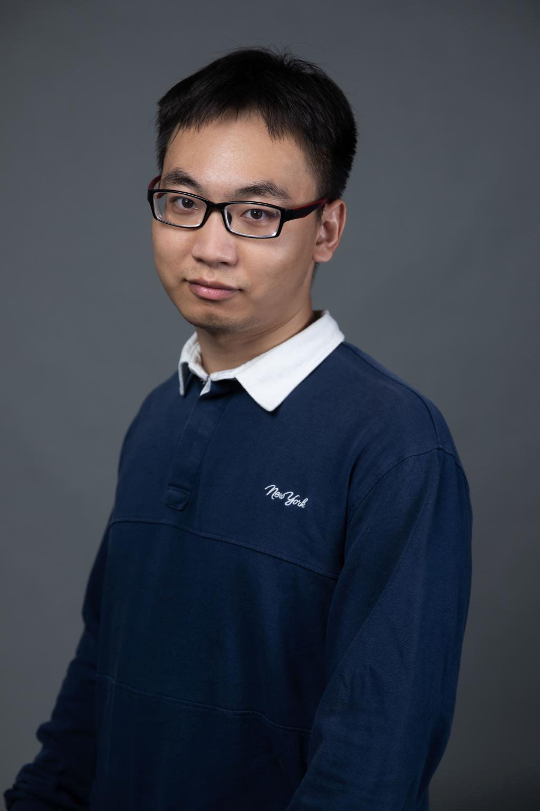

I am a PhD student in Physics at Westlake University, working with Prof. Pavlos G. Savvidis. My research focuses on polariton optoelectronics: planar DBR microcavities, exciton–polariton strong coupling in perovskites, and polariton-based devices.
